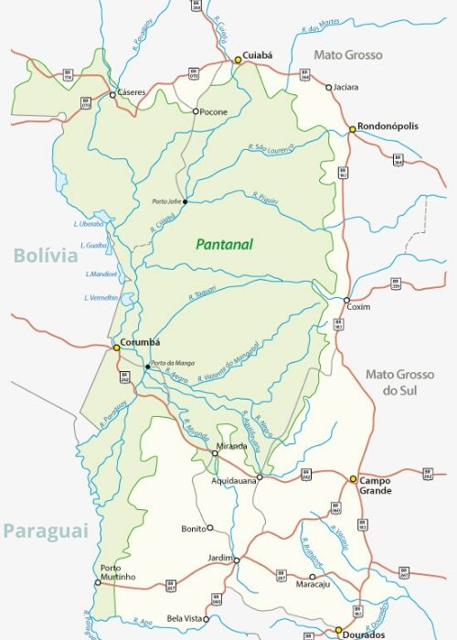

Localização
Esse bioma está localizado na Bacia Hidrográfica do Alto Paraguai e abrange os estados brasileiros do Mato Grosso e Mato Grosso do Sul; e ainda, uma pequena parte dos países Bolívia e Paraguai, onde é chamado de Chaco.


Pantanal ou Complexo do Pantanal é o menor bioma brasileiro e a maior planície de inundação do mundo
Esse bioma está localizado na Bacia Hidrográfica do Alto Paraguai e abrange os estados brasileiros do Mato Grosso e Mato Grosso do Sul; e ainda, uma pequena parte dos países Bolívia e Paraguai, onde é chamado de Chaco.
Provavelmente a fauna mais rica do planeta, o Pantanal é composto por diversas espécies de peixes, mamíferos, répteis, aves.
Segundo pesquisas, o bioma possui aproximadamente 1.000 espécies de borboletas, 650 de aves, 120 de mamíferos, 260 de peixes e o 90 de répteis. Na fauna do ecossistema pantaneiro destacam-se:
A flora do Pantanal é constituída por plantas migradas do Cerrado, da Amazônia (por exemplo, camalote-da-meia-noite e vitória-régia), do Chaco e da Mata Atlântica, ocorrendo raras espécies exclusivas (endêmicas) do Pantanal. Entretanto, os arranjos das espécies são característicos da região.
O clima do Pantanal é predominantemente Tropical Continental marcado pelas altas temperaturas e grande índice pluviométrico, um verão quente e chuvoso e um inverno frio e seco.
Entre em contato